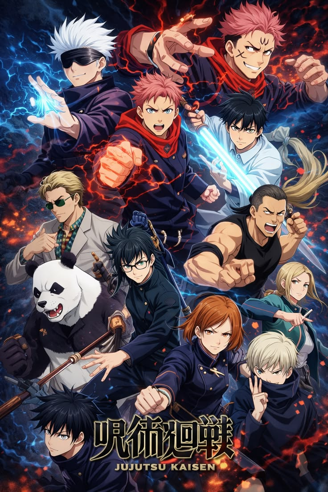

| AnimeSA | Home Top Anime Genres About |
Yuji Itadori joins a secret world of Jujutsu Sorcerers to fight dangerous Curses after swallowing a powerful cursed object.

Yuji Itadori is a kind-hearted high school student with incredible strength. His life changes when he swallows a cursed finger belonging to Sukuna, the King of Curses.
He becomes a student at Tokyo Jujutsu High, where he learns to fight cursed spirits and protect humanity from supernatural threats.
Contains intense violence, horror elements, and supernatural themes.
Jujutsu Kaisen became one of the most popular modern anime, known for: